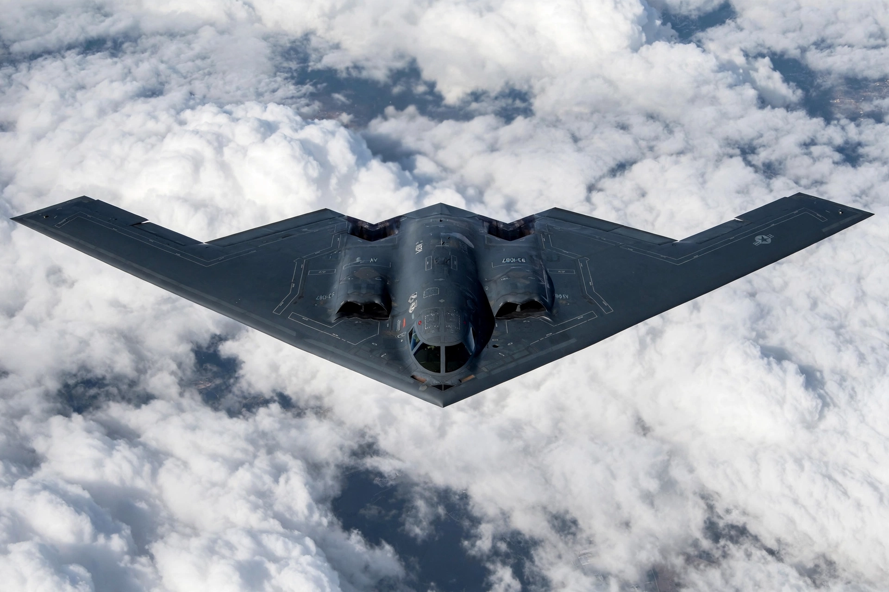

Northrop B-2 Spirit
From Wikipedia, the free encyclopedia

The B-2 Spirit.The Northrop B-2 Spirit is an American heavy strategic bomber featuring low-observable stealth technology, designed to penetrate dense anti-aircraft defences. Its pure flying-wing shape — a lineage from Northrop\'s 1940s YB-49 — gives an exceptionally low radar cross-section. Only 21 were built (1989–2000); based at Whiteman Air Force Base, Missouri, B-2s have flown combat missions from Kosovo (1999) to the Middle East and, in 2025, strikes reported against Iranian nuclear sites.
Development
Born of the secret \'Senior Trend\'/ATB programme under President Carter (revealed 1980), the B-2 was unveiled publicly in 1988 and first flew in 1989. The end of the Cold War cut the planned 132 aircraft to 21, driving the per-aircraft cost (about $2.1 billion including development) to famous heights.
Operations
B-2s flew 33-hour round trips from Missouri to Serbia in 1999, and long missions to Afghanistan, Iraq and Libya. A B-2 was lost in a 2008 crash on takeoff at Guam (crew ejected safely). The fleet is being modernised while its successor, the B-21 Raider, enters service later in the 2020s.
Design
Four buried General Electric F118 engines, a blended composite structure and precise edge alignment deliver stealth; the two-person crew sits between the intakes, and weapons (up to about 18 tonnes, including two Massive Ordnance Penetrators in 2025 reporting) ride in internal bays.